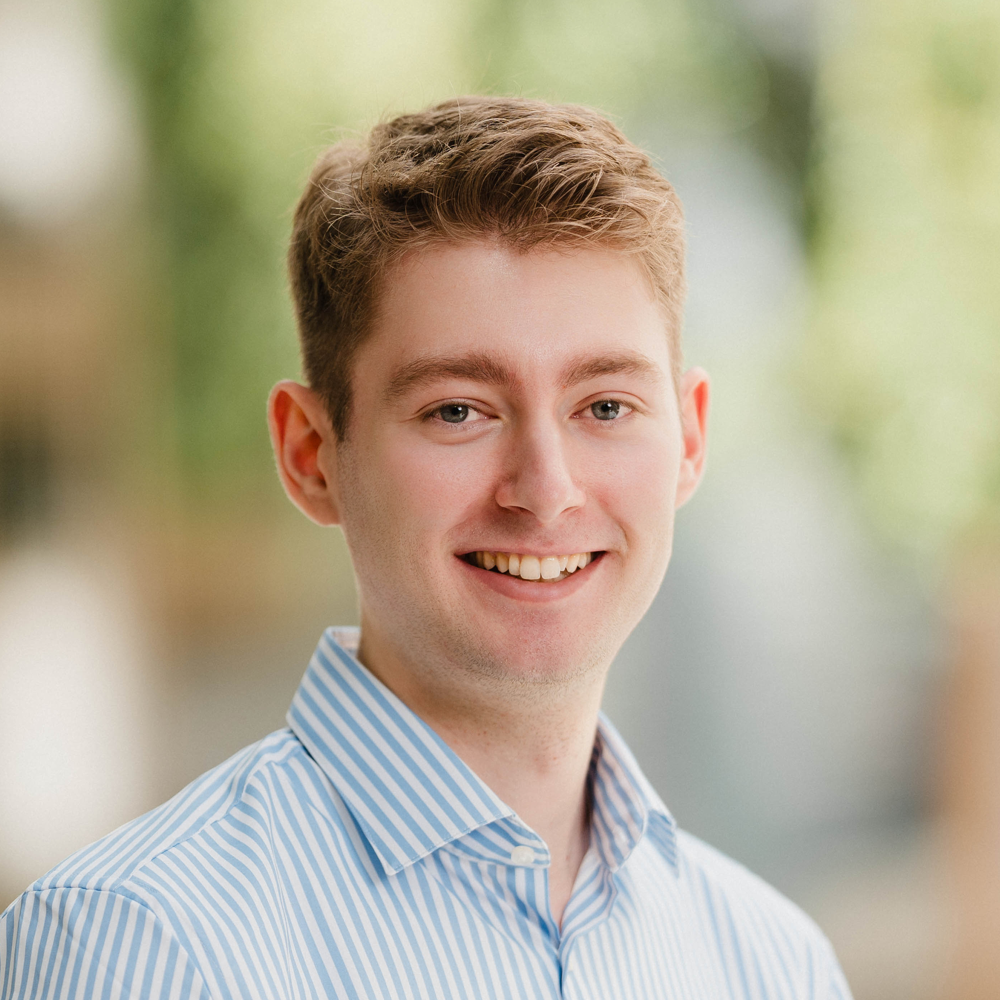

Welcome! I am a Ph.D. student at the Medical and Environmental Computing (MEC) Lab at TU Darmstadt. My research centers on resource-constrained AI and medical image analysis.
About Me
I am supervised by Anirban Mukhopadhyay. My primary research focus is on resource-constrained medical image analysis. Before starting my Ph. D. in May 2024, I completed my Master's thesis under the supervision of Camila González and Martin Mundt.
Research Focus
- Neural Cellular Automata: Exploring local, parameter-efficient learning mechanisms for medical imaging.
- Continual Learning: Preventing catastrophic forgetting in medical image segmentation models.
- Out-of-Distribution Detection: Identifying unexpected distribution shifts to improve failure safety.